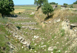

Homer
We have already looked at some of the lead-up to the Trojan War in the Mycenaean saga. The stories surrounding the Trojan war were perhaps the most important in the Greek world, and from the 8th century B.C.E. the story of the Trojan war recounted most prominently in Homer’s Iliad was told and retold around the Greek world. In examining the story of the Trojan war, we are going to spend a lot of time talking about the Iliad, attributed to Homer, but we will also look outside of this work. Let me begin, however, by looking a bit at Homer, the supposed author of the Iliad and the Odyssey (which we will look at in the next Essential Element).
The ancients knew very little about Homer; ancient biographies do exist, but little of what we find in these can be considered fact. The figure of Homer in antiquity, as much perhaps as certain Greek heroes, became mythologized. One anonymous ancient biographer, for example, tells us that Homer died when he could not work out the riddle of some Arcadian fisherman: ‘All that we caught we left behind, all that we missed we carry.’ (the answer is lice!). Clearly we are not to believe much, if anything which we hear in these accounts. The only aspect of the various accounts which we might want to place some faith in is Homer’s apparent connection with Ionia, in Northern Asia Minor.
The two great epics, the Iliad and Odyssey, are written in the Greek Ionic dialect, and there is good reason to connect the composition of these poems with that area. But we cannot be certain even that a single composer existed. It has long been recognized that the story of the Trojan war was told across many generations in an oral tradition. In this way, even if we imagine a single composer to have put together the Iliad as we have it today, we must accept that the story is the result of a tradition of cultural transmission and invention, rather than the work of a single composer.
This recognition of oral composition theory, and a long tradition of oral poetry which pre-dated the composition (in the original sense of the word, ‘a putting together’) of the Iliad as we have it, in perhaps the late 8th or 7th centuries, is particularly important in explaining certain historical inconsistencies which can be found in Homer. The time of which Homer is writing, the Trojan war, is not the 8th or 7th centuries B.C.E., but the earlier Mycenaean bronze age. We hear in the poem of the heroes coming from Mycenae, Pylos and Thebes, the great Mycenaean cities.
Famously, the German archeologist, Heinrich Schliemann, discovered the site of what is believed to be Troy in the Troad (northern Asia Minor, near modern Istanbul) (see image 1): one layer (strata 7a-7b) of the archaeological remains was sacked in the 12th century B.C.E. and, although it remains uncertain whether this is to be linked with Troy, it may well represent the historical seed for the great myth that has grown from it. If Schliemann’s city is Troy, it was certainly on a far smaller scale than that described in the Iliad, as must any war have been. But despite the obvious lack of factual reality in the world created by ‘Homer’, one can nonetheless perhaps trace elements of the poem to actual historical reality.
{kind=link}
We know that Mycenean culture was warlike and feudal, and that they were active traders who traveled in the Aegean. Also important is the archeology of what is described in Homer which is very mixed up. Homer is, on the one hand, clearly writing about a bronze-age society; bronze instruments, armour, descriptions of chariots, shields, including the famous shield of Achilles, correspond to the bronze age culture of Mycenae, and show that, through the tradition of epic poetry, Homer has inherited much from Mycenaean culture. On the other hand, there are times where Homer betrays his knowledge of iron-age instruments.